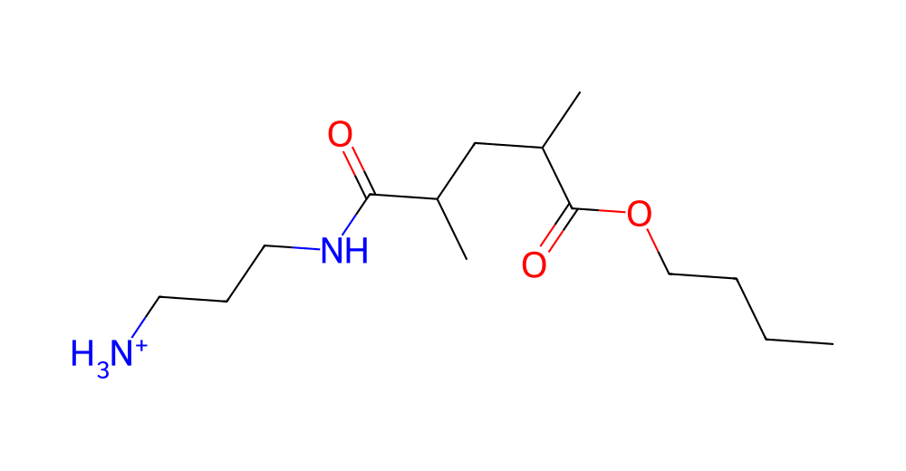

YOUR MOLECULAR WORKSPACE
Small building blocks.
Endless possibilities.
Choose your chemistry. Build a chain. Explore it in three dimensions.
C+
16 verified templates4 headgroups · 4 alkyl chain lengths

Enlarge ↗STRUCTURE PREVIEW
Primary ammonium C4 · 12 repeats
Drag to rotate · Scroll to zoom
Preparing your molecular workspace
CarbonNitrogenOxygenHydrogen
REPEAT UNITS—Connected building blocks
TOTAL ATOMS—Including hydrogens
COVALENT BONDS—Explicit connectivity
NET CHARGE—Formal charge, e
YOUR NEXT EXPERIMENT STARTS HERE
Take your structure with you.
Generate a polymer to explore its composition.
·
Initial assembled geometry. Energy minimization and a polymer-specific force field are needed before molecular dynamics.
BUILT ON YOUR CHEMISTRY
The building-block library
Sixteen source structures. A shared backbone. Four ways to make it your own.
Connectivity checked against the original PDB files. Bond orders retained from the matching MOL2 files.Download original monomer PDB ↗